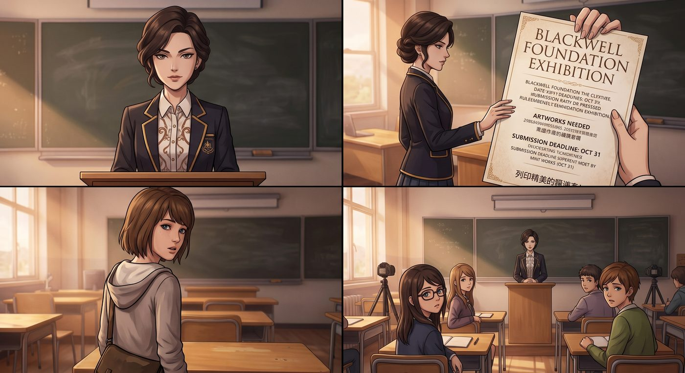

暗房裡的線索

一、聖旨
朝會上,Victoria 站上講台,手裡拿著一張列印精美的公告,語氣裡帶著一種與生俱來的居高臨下。
「校方要求,」她清了清嗓子,目光似有似無地掃過台下,在 Chloe 那個方向停留了兩秒,「本週校園開放日,所有同學務必注意儀容儀表,言行檢點,展現布萊克威爾學生應有的水準。畢竟,有些人的『個人風格』,可能不太適合出現在招生簡章的宣傳照片裡。」
台下響起零星的竊笑。Chloe 抱著手臂,毫不客氣地開口:「妳這話什麼意思?誰是垃圾?」
Victoria 挑眉,嘴角勾起一抹戲謔的笑,故意拖長了語調:「別誤會,」她環視一圈全場,慢悠悠地補了一句,「在座各位,都是。」
底下一片譁然,不少人被氣得咬牙切齒,卻沒人敢真的當面反駁——畢竟 Victoria 她爸是校方金主之一,這件事在布萊克威爾早已是公開的秘密,大家都心照不宣地選擇忍氣吞聲。
Chloe 冷笑一聲,沒再接話,只是在心裡把這筆帳記了下來。
二、暗房速成班
下課後,Chloe 拉著 Max 直奔鎮上圖書館——那裡地下室有一間對外開放的公共暗房,平時是攝影社團和幾個退休老人輪流使用,設備老舊卻齊全,只要提前登記,誰都能借用。
「教我幾招。」她開門見山。
「教妳什麼?」
「攝影,」Chloe 理所當然地說,「開放日那天,我要拍出比 Victoria 那張假掰宣傳照更有態度的東西,狠狠打她臉。」
Max 被她這股氣勢逗笑,還是耐心地打開暗房的紅色安全燈,開始示範沖洗照片的基本流程——顯影、停影、定影,每個步驟該注意的時間和手法。
暗房很小,兩人擠在狹窄的空間裡忙活,不時因為傳遞器材而肩碰肩、手碰手。牆外隱約能聽見圖書館走廊裡偶爾經過的腳步聲和翻書聲,那種隨時可能有人推門進來的公共感,讓這個小空間顯得格外私密又刺激。
「妳這樣拿夾子不對,」Max 湊過來糾正她的手勢,兩人的距離瞬間縮短到幾乎能感覺到彼此的呼吸。
Chloe 忽然停下動作,盯著她看了兩秒,嘴角勾起一抹熟悉的、不懷好意的笑。
「妳知道嗎,」她把手裡的夾子隨手一放,順勢欺身湊近,「這種公共場所,說不定還挺刺激的。」
「Chloe——」Max 想後退,卻被暗房的窄小空間逼得無路可退,背抵著沖印台。門外剛好傳來一陣腳步聲由遠而近,又漸漸走遠,她的心跳跟著漏了一拍。
「小電影不都是這樣拍的嗎,」Chloe 挑眉,語氣裡帶著調侃的曖昧,「公眾場所,隨時可能有人闖進來,說不定還挺有感覺的。」
Max 被逗得又好氣又好笑,伸手抵住她的肩膀,似笑非笑地推開一點距離:「妳看的那些小電影,大概都是某種變態癡漢的幻想吧,現實哪有那麼方便——而且這裡好歹是公共設施,妳膽子也太大了。」
「切,妳這是懷疑我的品味。」
正打鬧間,Max 的目光無意間飄向一旁晾曬架上、剛顯影出來的一批老照片——是她們去旅館那天拍下的取材照,先前一直沒仔細沖印完整。
她忽然愣住,伸手擋住還想繼續湊過來的 Chloe,神情瞬間認真起來,湊近仔細端詳其中一張。
「等等。」
「幹嘛啦,」Chloe 被晾在原地,一臉不滿,「氣氛都被妳弄沒了。」
「妳看這張。」Max 把那張照片舉到安全燈下,聲音有點發緊。
照片拍的是控制室那張堆滿設備的桌子一角,構圖歪斜,顯然是當時匆忙間隨手按下快門留下的畫面——但焦點恰好清晰地落在桌角一疊被壓在角落、原本不起眼的文件上。放大看去,那疊紙張的抬頭隱約印著銀行匯款單的格式,還有幾串模糊卻依稀可辨的數字和帳戶編號。
Chloe 湊過去仔細一看,臉色也跟著沉了下來。
「這是……財務文件?」
「我們得把這個拿給 Kenji 看。」Max 語氣篤定,已經小心翼翼地把照片從晾曬夾上取下來。
Chloe 望著她瞬間切換成一本正經模式的側臉,又低頭看了眼自己原本蓄勢待發、此刻卻徹底沒了用武之地的曖昧氣氛,長長地嘆了口氣。
「行吧行吧,」她無奈地舉起雙手投降,「案情比較重要,我懂。」
Max 抬頭看她一眼,忍不住笑出聲,伸手在她臉頰上輕輕拍了一下,算是安撫:「下次,我保證。」
「妳這話,」Chloe 哼了一聲,轉身收拾器材,「都說第八百次了。」